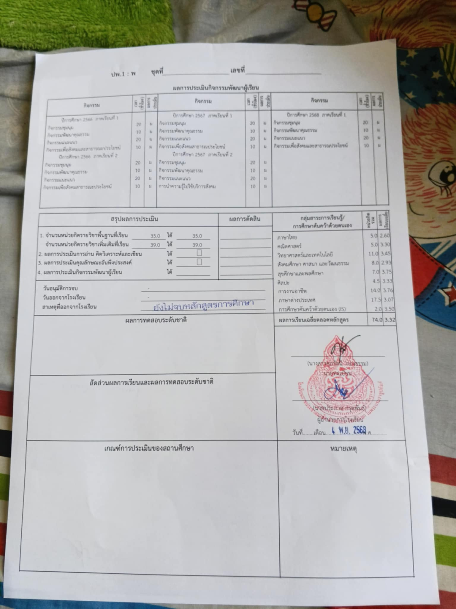
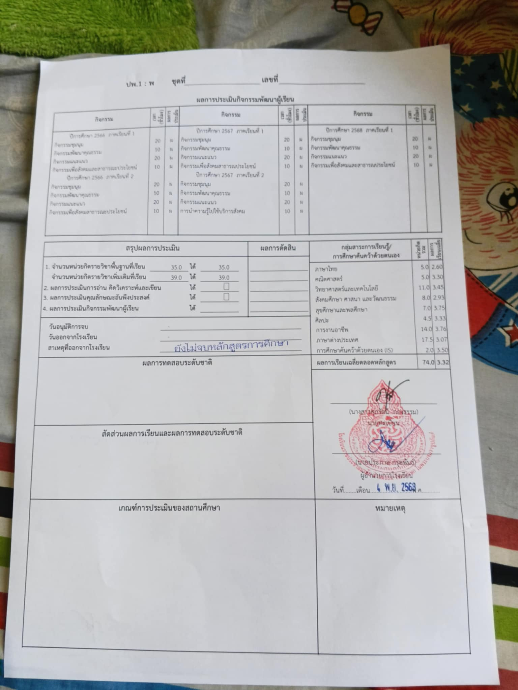

เกี่ยวกับฉัน
ชื่อ: นาย ดนุวัช จั่นเรือง
ชื่อเล่น: ปอนด์
อายุ: 18
วันเกิด: 25/09/2550
แรงบันดาลใจสำคัญที่ทำให้ผมสนใจสายเทคโนโลยีสารสนเทศ:
ผมมีความสนใจด้านเทคโนโลยีมาตั้งแต่เด็ก
จากการเล่นเกมและติดตามข่าวสารเกี่ยวกับโทรศัพท์และนวัตกรรมใหม่ ๆ
ทำให้ผมตระหนักว่าเทคโนโลยีมีบทบาทสำคัญในชีวิตประจำวันและกำลังเปลี่ยนแปลงโลกอย่างรวดเร็ว
ผมจึงอยากศึกษาด้านเทคโนโลยีสารสนเทศให้ลึกซึ้ง
เพื่อพัฒนาความรู้และเป็นส่วนหนึ่งในการสร้างสรรค์เทคโนโลยีที่ช่วยให้ชีวิตผู้คนสะดวกขึ้นในอนาคต
เป้าหมายในอนาคต: ในอนาคต
ผมตั้งใจพัฒนาความรู้ด้านเทคโนโลยีและเขียนโปรแกรมให้เชี่ยวชาญ เพื่อก้าวสู่อาชีพในสาย IT
ที่สามารถสร้างนวัตกรรมหรือระบบอัจฉริยะที่ช่วยให้ชีวิตผู้คนสะดวกขึ้น
ผมอยากเป็นส่วนหนึ่งในการพัฒนาเทคโนโลยีไทยให้ก้าวหน้าและสามารถแข่งขันได้ในระดับสากล
สิ่งที่คาดหวังในการเรียน:
ผมคาดหวังว่าจะได้เรียนรู้ทั้งภาคทฤษฎีและภาคปฏิบัติด้านเทคโนโลยีสารสนเทศอย่างลึกซึ้ง
โดยเฉพาะเรื่องการพัฒนาโปรแกรม การทำงานของระบบคอมพิวเตอร์ และเทคโนโลยีใหม่ ๆ เช่น AI หรือ IoT
ผมอยากเข้าใจวิธีการนำเทคโนโลยีไปประยุกต์ใช้แก้ปัญหาในชีวิตจริง
รวมถึงได้ฝึกทักษะการทำงานเป็นทีมและการคิดเชิงวิเคราะห์
เพื่อเตรียมพร้อมสำหรับการทำงานในอนาคตอย่างมืออาชีพ
Statement of Purpose
ผมชื่อ ดนุวัช จั่นเรือง จากโรงเรียนราชประชาสมาสัย ฝ่ายมัธยม รัชดาภิเษก ในพระบรมราชูปถัมภ์ สายการเรียนภาษาอังกฤษ-ธุรกิจ ด้วยความสนใจในเทคโนโลยีมาตั้งแต่เด็ก ผมจึงมีความตั้งใจที่จะศึกษาต่อในระดับอุดมศึกษาในสาขาเทคโนโลยีสารสนเทศ (Information Technology) ณ มหาวิทยาลัยเทคโนโลยีพระจอมเกล้าธนบุรี ซึ่งเป็นสถาบันที่มีความโดดเด่นด้านวิทยาศาสตร์และเทคโนโลยีอันดับต้น ๆ ของประเทศ
เทคโนโลยีในยุคปัจจุบันได้กลายเป็นส่วนหนึ่งของชีวิตประจำวันของมนุษย์อย่างแนบแน่น แทบจะเรียกได้ว่าเป็น "ปัจจัยที่ 5" ที่ขาดไม่ได้ของการดำรงชีวิต ผมตระหนักถึงพลังของเทคโนโลยีที่สามารถเข้าถึงคนได้ทุกเพศทุกวัย สร้างความสะดวกสบาย เพิ่มประสิทธิภาพในการทำงาน และเปลี่ยนแปลงวิธีคิดของสังคมโลก ภาพของโลกอนาคตที่ขับเคลื่อนด้วย AI และเทคโนโลยีอัจฉริยะ ทำให้ผมเชื่อว่าสายอาชีพด้าน IT ไม่เพียงแต่จะเป็นที่ต้องการอย่างสูง แต่ยังมีบทบาทสำคัญต่อโครงสร้างของเศรษฐกิจและคุณภาพชีวิตของผู้คนอย่างลึกซึ้ง
แม้ในช่วงที่ผ่านมาผมยังไม่มีโอกาสได้เข้าร่วมกิจกรรมหรือโครงการที่เกี่ยวข้องกับเทคโนโลยีสารสนเทศโดยตรง แต่ผมเป็นคนที่ชอบศึกษาและติดตามข่าวสารด้านเทคโนโลยีอย่างต่อเนื่อง โดยเฉพาะเรื่องของสมาร์ตโฟนและนวัตกรรมใหม่ในแต่ละปี ผมมีความสนใจในวิวัฒนาการของฮาร์ดแวร์ ซอฟต์แวร์ และราคาที่เปลี่ยนแปลงอย่างน่าประหลาดใจในช่วงเวลาอันสั้น เช่น เทคโนโลยีที่เคยมีราคาแพงกลับกลายเป็นสิ่งที่จับต้องได้ในปัจจุบัน สิ่งนี้ทำให้ผมรู้สึกตื่นเต้นและอยากเป็นส่วนหนึ่งของการพัฒนาเทคโนโลยีในอนาคต
แรงบันดาลใจสำคัญที่ทำให้ผมสนใจสายเทคโนโลยีสารสนเทศ มาจากการที่ผมเริ่มเล่นเกมตั้งแต่ยังเด็ก จนพัฒนาความสนใจไปสู่การศึกษาว่า เครื่องที่เราเล่นเกมนั้นทำงานอย่างไร เกมถูกสร้างขึ้นอย่างไร และต้องใช้เทคโนโลยีประเภทใดบ้าง สิ่งนี้ทำให้ผมเริ่มติดตามช่องเทคโนโลยี ดูรีวิวมือถือ ศึกษาคุณสมบัติต่าง ๆ ด้วยความอยากรู้อยากเห็น จากความชอบนี้ทำให้ผมเริ่มคิดว่าสิ่งที่เราชอบสามารถกลายเป็นเส้นทางอาชีพที่สร้างอนาคตได้
ผมเชื่อว่าจุดแข็งของผมคือความสามารถในการบริหารจัดการเวลา การรับมือกับภาระงานหลายอย่างพร้อมกันได้อย่างมีประสิทธิภาพ และมีความตั้งใจจริงที่จะเรียนรู้สิ่งใหม่อยู่เสมอ ด้วยความเข้าใจพื้นฐานทางเทคโนโลยีที่เกิดจากความสนใจส่วนตัว ผมจึงพร้อมที่จะพัฒนาตนเองในระดับที่ลึกซึ้งขึ้นภายใต้การเรียนการสอนของมหาวิทยาลัยแห่งนี้
สุดท้ายนี้ ผมหวังเป็นอย่างยิ่งว่าจะได้รับโอกาสให้เข้าเป็นส่วนหนึ่งของคณะเทคโนโลยีสารสนเทศ เพื่อพัฒนาศักยภาพและร่วมเป็นแรงขับเคลื่อนในการสร้างสรรค์เทคโนโลยีที่สามารถเปลี่ยนแปลงโลกให้ดีขึ้นได้
ขอแสดงความนับถือ
นายดนุวัช จั่นเรือง
เกรดเฉลี่ย 5 เทอม
 

ผลงานและเกียรติบัตร
**ชื่อผลงานที่ 1:** เกียรติบัตรยอดนักอ่าน
**ชื่อผลงานที่ 2:** บำเพ็ญประโยชน์ต่อโรงเรียน

**ชื่อผลงานที่ 3:** เว็บไซต์ Portfolio ส่วนตัว (สร้างด้วย HTML/CSS/JS)
**ชื่อผลงานที่ 4:** Space Attact Game เป็นเกมง่ายๆ ที่ผมสร้างเพื่อพัฒนาฝีมือของตัวผมเอง (กดที่รูปภาพเพื่อเล่น)

**ชื่อผลงานที่ 5:** เป็นการยืนยันว่าท่านจะให้ผมผ่านไหม (กดที่รูปภาพเพื่อเล่น)